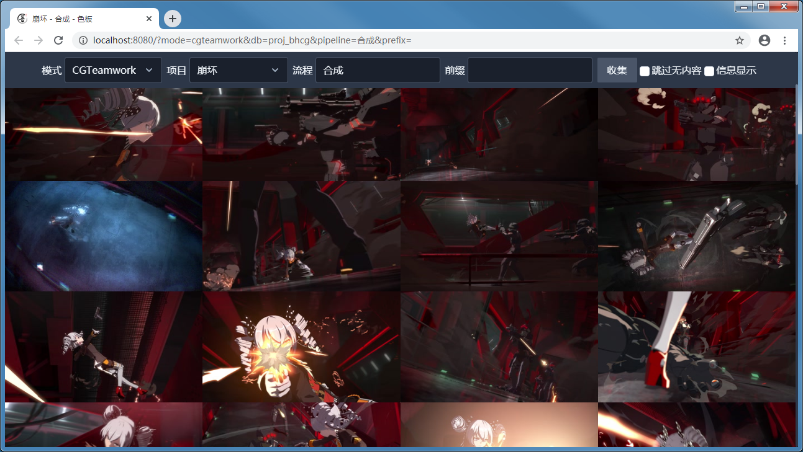

使用总览视图¶

应用默认即为总览视图，展示所有匹配的收藏。
视图使用网格布局，根据窗口宽度自动调整列数，最小 1 列，最大 6 列。
信息显示¶
在每个单元格上使用覆盖层显示对应收藏的额外信息。
标题¶
在底部会显示收藏的标题。
CGTeamwork 任务状态¶
对 CGTeamwork 模式收集的收藏可用。
在右上角显示对应总览显示阶段的所有任务状态中优先级最高的值。
总览显示阶段可在查看器中设置，参见 使用查看器 。
任务状态优先级从高到底为：
关闭
返修
检查
等待
通过
其他
隐藏覆盖层¶
在导航栏中可以取消 信息显示 的勾选，会记录对此项的变更于浏览器的本地存储中，下次使用时自动使用和上次相同的设置。